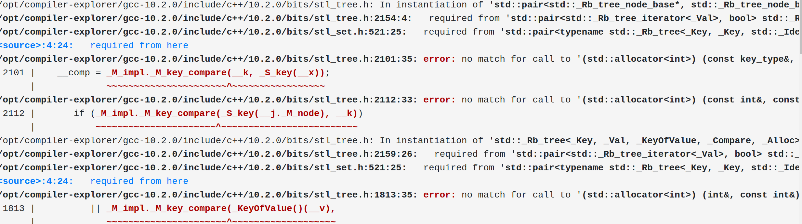

Template Shenanigans
Developing template code
Agenda
- Compiling
- Debugging
- Testing
- Benchmarking
Who am I?
- Jonathan O'Connor he/him
- I develop code for The Cluster Company GmbH
- C++20 in-memory database
- Metaprogramming in Basic, Lisp, C++, Java and Ruby since 1983
- Chess, making ice cream
- github/ninkibah, @ninkibah
Agenda
- Compiling
- Debugging
- Testing
- Benchmarking
Error messages
- Famous for being long
- Too many messages
Error messages
#include <set>
void main() {
std::set<int> uniqueInts;
uniqueInts.insert(42);
}
Error messages
#include <set>
void main() {
std::set<int, std::allocator<int>> uniqueInts;
uniqueInts.insert(42);
}
Error messages
Read to the end
std::pair<std::_Rb_tree_node_base*, std::_Rb_tree_node_base*>
std::_Rb_tree<_Key, _Val, _KeyOfValue, _Compare, _Alloc>::
_M_get_insert_unique_pos(const key_type&)
[with _Key = int;
_Val = int;
_KeyOfValue = std::_Identity<int>;
_Compare = std::allocator<int>;
_Alloc = std::allocator<int>;
std::_Rb_tree<_Key, _Val, _KeyOfValue, _Compare, _Alloc>::key_type = int]
Format the error message
- Suggested by Ben Deane
- He uses ClangFormat
- Copy declaration to cpp file
- Format the copied text
Format the error message
std::pair<typename std::_Rb_tree<_Key, _Key, std::_Identity<_Tp>, _Compare,
typename __gnu_cxx::__alloc_traits<_Alloc>::
rebind<_Key>::other>::const_iterator,
bool>
std::set<_Key, _Compare, _Alloc>::insert(
std::set<_Key, _Compare, _Alloc>::value_type &&);
Simplify the error message
- https://github.com/SuperV1234/camomilla
- Python3 script from Vittorio Romeo
- Replaces namespaces and generic templates with shorter versions.
- Can't replace std::basic_string<char> with string
Simplify the error message
$ echo "metavector<metatype<metawhatever<int>>>::x()" \
| camomilla -d0
# outputs
metavector<?>::x()
Simplify the error message
$ echo "std::vector<std::pair<std::int16_t, std::int32_t>>" \
| camomilla --depth=100
# outputs
vector<pair<int16_t, int32_t>>
Agenda
- Compiling
- Debugging
- Testing
- Benchmarking
Template debugging
- Using the normal debugger
- Printing a type name
- Template Instantiation tools
Constexpr function debugging
What type do I have?
- Can I use typeid(T).name()?
- ??? NSt7__cxx1112basic_stringIcSt11char_traitsIcESaIcEEE
- __FUNCTION__
- doesn't show templated arguments
- __PRETTY_FUNCTION__
- works on gcc and clang, but not MSVC
__PRETTY_FUNCTION__
void print_me(int) {
cout << __PRETTY_FUNCTION__ '\n';
}
void print_me(int)
__PRETTY_FUNCTION__
template<typename T>
void print_me(T* = nullptr) {
cout << __PRETTY_FUNCTION__ '\n';
}
print_me<int>();
void print_me(T *) [with T = int]
function to print the type
template<typename T>
auto name_of_T(T* = nullptr) {
std::string pretty_func = __PRETTY_FUNCTION__;
auto pos = pretty_func.find('=');
if (pos == std::string::npos) {
return pretty_func;
}
return pretty_func.substr(pos + 2, pretty_func.length() - pos - 3);
}
function to print the type
cout << name_of_T<std::string>() << '\n';
// gcc prints
// std::__cxx11::basic_string<char>
// clang prints
// std::__cxx11::basic_string<char,
// std::char_traits<char>, std::allocator<char>>
Print types at compile time
- Ivan Čukić mentions a nice trick to print a deduced type at compile time
- Template declaration, no definition
- Instantiation causes an error
- Downside: Generates an error and stops compilation
Print types at compile time
template<typename T>
class print_me_as_error;
print_me_as_error<std::vector<int>::element_type>();
error: invalid use of incomplete type
'class print_me_as_error<int>'
Print types at compile time
- Daniel Frey (of TAOCPP fame) uses another version of this technique
- constexpr value marked as deprecated!
- To instantiate it, use static_assert
- Generates warning and continues compiling
Print types at compile time
template<typename T>
[[deprecated]] constexpr bool print_type = true;
static_assert(print_type<std::vector<int>::element_type>);
warning: 'print_type<int>' is deprecated
[-Wdeprecated-declarations]
4 | static_assert(printType<std::vector<int>::value_type>);
Code Insights
- https://cppinsights.io/
- Brainchild of Andreas Fertig
- Like godbolt.org
- Generates simple C++ instead of assembler
- Shows range-based for loops
- Shows template instantiations
Code Insights
Metashell
- http://metashell.org
- A Meta-debugger!
- Complicated to set up
- Please someone make a web front end
Metashell
MSGUI
- https://github.com/RangelReale/msgui
- Qt frontend for Metashell
- Looks cool

Agenda
- Compiling
- Debugging
- Testing
- Benchmarking
Run-time tests
template<typename T>
requires std::integral<T>
constexpr T double_it(T x) {
return 2 * x;
}
TEST_CASE( "my template test" ) {
REQUIRE( double_it(3) == 6 );
}
Compile-time tests
- Pre-2000 The Boost Static Assertion Library
- 2002 Proposed by Robert Klarer and Dr. John Maddock
- C++11 introduced static_assert keyword
- static_assert(constexpr bool, "Error text")
- Generates an error if the bool expression evaluates to false
- C++17 made the error text optional
static_assert( false, "Woops!!!" );
static_assert in code
template<typename T>
requires std::integral<T>
constexpr T double_it(T x) {
return 2 * x;
}
static_assert( double_it(3) == 6,
"double_it should multiply by 2" );
When to test at compile-time?
- To ensure a type keeps certain properties
- Often in if constexpr statements
- Generates an error closer to point of call
- Can reduce size of error messages
Versioned data
template<int> struct Person;
template<>
struct Person<0> {
std::string firstName, lastName;
};
template<>
struct Person<1> {
std::string firstName, lastName;
int yob;
Person<0> migrateDown() const;
};
Versioned data
template<int N>
inline auto downgradeOnce (const Person<N>& newer) {
if constexpr (N == 0) {
return newer;
} else if constexpr ( requires { newer.migrateDown(); }) {
return newer.migrateDown();
} else {
static_assert(false,
"newer needs a migrateDown member function");
}
}
Versioned data
template<int N>
inline auto downgradeOnce (const Person<N>& newer) {
if constexpr (N == 0) {
return newer;
} else if constexpr ( requires { newer.migrateDown(); }) {
return newer.migrateDown();
} else {
static_assert(always_false<Person<N>>,
"The Person version of newer needs a migrateDown member function");
}
}
always_false
https://en.cppreference.com/w/cpp/
utility/variant/visit
template<typename T>
constexpr inline bool always_false = false;
Archetypes
- Test classes that contain minimal behaviour
- Described in Chapter 28 of C++ Templates book
- Mentioned by David Abrahams and Douglas Gregor
- http://www.generic-programming.org/languages/
cpp/techniques.html#archetypes - Not quite superceded by C++20 concepts
Archetypes
- Blog by Andrzej Krzemieński
- https://akrzemi1.wordpress.com/2020/09/02/concept-archetypes
- https://akrzemi1.wordpress.com/2020/09/10/concept-archetypes-update
- https://akrzemi1.wordpress.com/2020/10/26/semantic-requirements-in-concepts
Archetypes for testing
- Tiny classes
- Delete functionality
Creating Archetypes
template<typename T>
int find(T const* array, int n, T const& value) {
int i = 0;
while ( i != n && array[i] != value)
++i;
return i;
}
Creating Archetypes
class EqualityComparableArchetype {
};
bool
operator==(EqualityComparableArchetype const&,
EqualityComparableArchetype const&);
Creating Archetypes
class EqualityComparableArchetype {
};
struct ConvertibleToBoolArchetype {
operator bool() const;
};
ConvertibleToBoolArchetype
operator==(EqualityComparableArchetype const&,
EqualityComparableArchetype const&);
Creating Archetypes
template int find(
EqualityComparableArchetype const* array, int n,
EqualityComparableArchetype const& value);
Creating Archetypes
In instantiation of 'int find(const T*, int, const T&) [with T = EqualityComparableArchetype]':
21:45: required from here
4:32: error: return type of 'ConvertibleToBoolArchetype operator==(const EqualityComparableArchetype&, const EqualityComparableArchetype&)' is not 'bool'
4 | while ( i != n && array[i] != value)
| ~~~~~~~~~^~~~~~~~
4:32: note: used as rewritten candidate for comparison of 'const EqualityComparableArchetype' and 'const EqualityComparableArchetype'
Creating Archetypes
template<typename T>
int find(T const* array, int n, T const& value) {
int i = 0;
while ( i != n && !(array[i] == value))
++i;
return i;
}
Agenda
- Compiling
- Debugging
- Testing
- Benchmarking
Benchmarking
- Optimizing template code
- Comparing build times
Tracers
- Described in chapter 28 of C++ Templates book
- Can test quality of implementation
- Count calls to particular functions
- Found in libstdc++ test code
Tracers
struct TracedItem {
inline static int def_ctors = 0;
inline static int copy_ctors = 0;
inline static int move_ctors = 0;
TracedItem() { ++def_ctors; }
TracedItem(const TracedItem&) { ++copy_ctors; }
TracedItem(TracedItem&&) noexcept { ++move_ctors; }
};
Tracers
int main() {
std::vector<TracedItem> items;
items.emplace_back(); // 1 def
items.push_back(TracedItem{}); // 1 def + 1 move
items.emplace_back(TracedItem{}); // 1 def + 1 move
std::cout << "default ctors " << TracedItem::def_ctors
<< "\ncopy ctors " << TracedItem::copy_ctors
<< "\nmove ctors " << TracedItem::move_ctors << '\n';
return 0;
}
No copy ctors were harmed in making this example!
Comparing build times
- Compiler flags
- Microsoft Visual Studio Build Insights
- build-bench.com
- metaBench tool
gcc & Clang -ftime-report
Time variable usr GGC
phase setup : 0.00 ( 0%) 1505 kB ( 2%)
phase parsing : 0.59 ( 83%) 63979 kB ( 81%)
phase lang. deferred : 0.06 ( 8%) 7268 kB ( 9%)
phase opt and generate : 0.06 ( 8%) 6136 kB ( 8%)
|name lookup : 0.10 ( 14%) 2262 kB ( 3%)
|overload resolution : 0.17 ( 24%) 19631 kB ( 25%)
callgraph construction : 0.01 ( 1%) 2209 kB ( 3%)
callgraph optimization : 0.01 ( 1%) 0 kB ( 0%)
callgraph ipa passes : 0.01 ( 1%) 328 kB ( 0%)
preprocessing : 0.11 ( 15%) 1504 kB ( 2%)
template instantiation : 0.25 ( 35%) 25293 kB ( 32%)
constant expr. evaluation : 0.01 ( 1%) 113 kB ( 0%)
constraint satisfaction : 0.02 ( 3%) 2570 kB ( 3%)
TOTAL : 0.71 79097 kB
gcc -fmem-report
Number of expanded macros: 6059
Average number of tokens per macro expansion: 3
Line Table allocations during the compilation process
Number of ordinary maps used: 500
Ordinary map used size: 11k
Number of ordinary maps allocated: 682
Ordinary maps allocated size: 15k
Number of macro maps used: 5965
Macro maps used size: 186k
Macro maps locations size: 183k
Macro maps size: 369k
Duplicated maps locations size: 75k
Total allocated maps size: 455k
Total used maps size: 381k
Ad-hoc table size: 768k
Ad-hoc table entries used: 21k
optimized_ranges: 276k
unoptimized_ranges: 23k
MS Build Insights
build-bench.com
- Created by Fred Tingaud
- Like godbolt.org
- Add 2 or more versions of an application
- Graphs compilation time and process size
Metabench
- https://github.com/ldionne/metabench
- Times versions of your program
- Uses ruby
Metabench
Metabench CMakeLists.txt
# Make sure Metabench can be found when writing include(metabench)
list(APPEND CMAKE_MODULE_PATH "../metabench")
# Actually include the module
include(../metabench/metabench.cmake)
# Add new datasets
metabench_add_dataset(sortUnique "sortUnique.cpp.erb" "(1..40).to_a")
metabench_add_dataset(handRolled "handRolled.cpp.erb" "(1..40).to_a")
# Add a new chart
metabench_add_chart(chart DATASETS sortUnique handRolled)
eRuby files
#if defined(METABENCH)
static auto tup1 = std::make_tuple(
<%= (1..n).to_a.reverse.join(', ') %>
);
#endif
eRuby files
#if defined(METABENCH)
static auto tup1 = std::make_tuple(
10, 9, 8, 7, 6, 5, 4, 3, 2, 1
);
#endif
/home/joconnor/bin/clion-203.4818.55/bin/cmake/linux/bin/cmake --build /home/joconnor/projects/cpp/talks/Shenanigans/cmake-build-debug --target chart -- -j 6
[ 33%] Generating handRolled.json
[ 66%] Generating sortUnique.json
==> 2% (0.0s) dataset1.cpp.erb (n = 1)/home/joconnor/.rvm/rubies/ruby-2.6.1/lib/ruby/2.6.0/open3.rb:213: warning: Insecure world writable dir /opt in PATH, mode 040777
==> 2% (0.0s) handrolled.cpp.erb (n = 1)/home/joconnor/.rvm/rubies/ruby-2.6.1/lib/ruby/2.6.0/open3.rb:213: warning: Insecure world writable dir /opt in PATH, mode 040777
==> 100% (30.1s) handrolled.cpp.erb (n = 40)
==> 100% (30.16s) dataset1.cpp.erb (n = 40)
Generating chart.html
Built target chart

Conclusions: Compiling
- Read the error message
- Get your editor to format the declaration
- Use Camomilla to simplify the error messages
Conclusions: Debugging
- The normal debugger can handle constexpr functions
- Print a deduced type using deprecated trick
- Code Insights is a great tool
- Meta-debugging with Metashell and MSGUI
Conclusions: Testing
- Unit tests still work
- static_assert
- Remember the always_false template trick
- Archtypes can test templates and concepts
Conclusions: Benchmarking
- Tracer types to count function calls
- Compile-time Benchmarking
- build-bench.com
- metabench CMake module
PS
- Stack Overflow
- #include discord server
- godbolt.org
The End